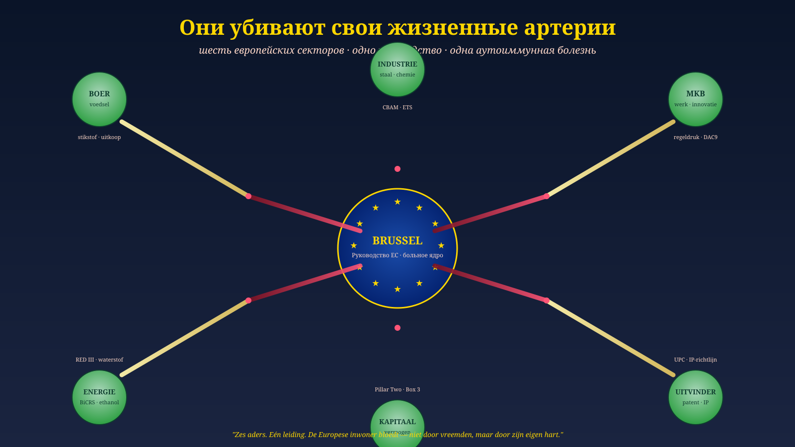

Они убивают свои жизненные артерии
У Брюсселя анти-иммунная болезнь. Пациент называется Европа.
Jacobus van Merksteijn · 19 июня 2026
Они убивают свои жизненные артерии — шесть европейских секторов, которые обеспечивают континент деньгами, едой, энергией и перспективой.
Никакой риторики. Четыре факта этого месяца.
1 января 2026 · CBAM окончательная фаза
€75,36 за тонну CO₂ на весь импорт стали, алюминия, цемента, удобрений, электроэнергии и водорода. €2,1 млрд в квартал затрат. Европейские экспортёры на третьи рынки не получают никакого возмещения — чистая обратная утечка углерода.
12 июня 2026 · ECOFIN усиливает CBAM
Совет расширяет CBAM на производные продукты (машины с существенным содержанием стали или алюминия). Цена остаётся привязанной к ETS — €60–75/тонну — а бесплатное распределение квот сокращается с 97,5% до 0% к 2034 году. Европейская промышленность структурно делается дороже, чем любой конкурент за пределами Европы.
30 июня 2026 · Срок подачи GIR по Pillar Two
Первый срок подачи GloBE Information Return для транснациональных компаний (оборот €750 млн+) — 30 июня. 15% минимальный налог в каждой юрисдикции, доначисление через UTPR, все национальные фискальные стимулы фактически выхолащиваются. Патентный ящик, вычет на НИОКР, инвестиционная стабилизация: всё проверяется против рентабельности GloBE.
апрель–июнь 2026 · RED III в национальных законах
Германия закрепляет квоту 10% RFNBO для 2040 года — гарантированный рынок для зелёного водорода. Для BiCRS, биоэтанола и циркулярного углерода: более строгая сертификация, продовольственное и кормовое сырьё выводится из использования. CropEnergies AG призывает к Carbon Utilisation Trading System и признанию биомассы из сельскохозяйственных культур. Брюссель отказывает.
Один месяц. Четыре механизма над одной жертвой.
И промышленность не одна. Фермер: отмена ЕСП, ограничения на удобрения, ограничения на торговлю животными (как запрет на выращенное мясо от 11 июня). Капитал: доначисление Pillar Two, налог на прирост стоимости имущества, отчётность DAC9. МСП: CSRD, CSDDD, отчётность по импорту CBAM, соответствие EU AI Act. Энергетика: ETS2 для жилья+транспорта с 2027, отказ от газа, ограничения биомассы. Изобретатель: расходы UPC, процедуры возражения на патенты, директивы по ИС, которые тормозят инновации вместо ускорения.
Одно руководство. Шесть секторов. Одна закономерность.
У Европы шесть жизненных артерий: промышленность, МСП, фермер, энергетика, капитал, изобретатель. Отсюда берутся деньги на здравоохранение, образование, оборону, пенсии. Нет производства — нет денег — нет общества. Арифметика.
Эти шесть артерий сейчас перерезаются руководством, которое на них живёт.
Ради чего? Ради климатических целей 2015 года в мире 2026 года. У Техаса нет ETS. У Китая нет CBAM. У Индии нет Pillar Two. То, что Брюссель делает уникально, — он делает против своей собственной промышленности. Не из злого умысла. Это и есть клиническая картина болезни.
Живое доказательство того, что иначе можно: Carbon-Alert BiCRS / Этанол
Прежде чем провести параллель с медициной — один конкретный пример. Работающий маршрут, доступный сейчас. Не гипотетический. Не десятилетия вперёд. Внедряемый сегодня.
Carbon-Alert Ltd разработала двухколейный продукт, решающий именно ту проблему, которую Брюссель пытается устранить через CBAM, ETS и RED III — но без уничтожения собственной европейской промышленности.
Колея 1 · BiCRS через аноксическую инъекцию биомассы
Экваториальная зона, 10° с. ш. до 10° ю. ш. На гектар в год:
- 400 т свежей биомассы
- × 23,5% доля сухого вещества = 94 т сухого вещества
- × 47% углерод = 44 т C всего в растении
- × 92,5% сохранение в аноксических условиях = 40,9 т C зафиксировано
- × 3,666 (CO₂/C) = 150 т CO₂ над землёй
- + 50 т CO₂ корневая масса под землёй
- = 200 т CO₂/га/год постоянно зафиксировано
Мобильное оборудование для разрушения клеток и инъекции приезжает прямо на участок. Биомасса разжижается на месте и вводится прямо под собственные корни. Никакого транспорта. Никакого завода. Никакой логистической цепи. Углерод остаётся навсегда в почве под культурой. Экономика на месте.
Колея 2 · Биоэтанол как отдельный второй маршрут
Другие гектары, другое хозяйство. Собранная биомасса транспортируется на местный завод по сбраживанию и дистилляции (50–100 км, как бразильский завод по переработке сахарного тростника). Биоэтанол покидает экваториальную страну-производителя на танкерах в направлении европейских портов. Полноценная замена бензину и дизелю. Климатически нейтральна благодаря замкнутому углеродному циклу.
Ценовой разрыв, который Брюссель не хочет видеть
Модельная цена BiCRS: €40 за тонну CO₂
Фактические производственные затраты: €22–€28 за тонну CO₂
Текущая цена EU ETS: €78 за тонну CO₂ (CBAM €75,36/тонну)
BiCRS структурно дешевле ETS — и обеспечивает реальное удаление углерода, а не просто ценовой сигнал.
Что даёт один гектар — для Конго, для Европы
Конголезский фермер переходит с маниоки (€300 на гектар в год) на биомассу BiCRS по контракту. 200 т CO₂ × €40 = €8 000 брутто на гектар в год. За вычетом операторской маржи и операционных расходов у него остаётся €2 000–€3 000 нетто — в семь-десять раз больше нынешнего дохода.
На уровне страны: Конго-Киншаса с 2,8 млн га под контрактом BiCRS получает €22,4 млрд в год брутто — около 20% нынешнего ВВП. Индонезия с 2,1 млн га: €16,8 млрд в год. Бразилия по краю Амазонии: €22,4 млрд в год. Не как благотворительность, а как коммерческие отношения, в которых страна-партнёр поставляет то, в чём у неё сравнительное преимущество (климат, солнечный свет, вода), а Европа платит за то, в чём у неё сравнительный дефицит (климатическая политика, промышленная конкурентоспособность, энергетическая независимость).
Что это даёт шести европейским артериям
- Промышленность больше не платит ни CBAM, ни ETS. Carbon-Alert поставляет климатическую компенсацию по €40/тонну вместо €78/тонну. Конкурентный недостаток исчезает.
- МСП получает за отчётностью CSRD реальные цифры: европейская цепочка удаления углерода с отслеживаемыми источниками выбросов.
- Фермер в Европе остаётся фермером, поскольку существующее сельское хозяйство не должно конкурировать с распределением биомассы. Экваториальное производство является дополнительным, а не замещающим.
- Энергетика получает собственный углеродный цикл — биоэтанол как прямая замена ископаемого топлива, с производством в странах-партнёрах, где солнечное излучение неограниченно.
- Капитал получает инвестиционную цель с измеримой доходностью: €40/тонну оборот, €12–€18/тонну маржа, масштабируется до 14 млн га по всему миру.
- Изобретатель получает признание того, что сейчас исключено RED III — маршрут биомассы, in-situ инъекция, аноксическое хранение: три патентуемых инновации, которые Брюссель сейчас активно вытесняет.
Один продукт. Два маршрута. Шесть артерий сохранены вместо перерезанных.
Что с этим делает Брюссель
Ничего.
RED III выводит продовольственное и кормовое сырьё. Биоэтанол из сахарного тростника, кукурузы и маниоки исключается из квот RFNBO. Одновременно водород — инфраструктура, которой в Европе ещё нет — получает гарантированный рынок 10% в транспорте к 2040 году.
Маршрут Carbon-Alert BiCRS не вписывается в брюссельскую модель, потому что его не придумал какой-либо DG ЕС. Он пришёл с Мальты, от предпринимателя, из запатентованной инновации. Для анти-иммунного руководства это двойная угроза: не только альтернативная политика, но и альтернативный авторитет.
И поэтому его игнорируют. Не опровергают. Не взвешивают. Не проверяют. Игнорируют.
Брюссель выбирает €78 за тонну ETS, который душит собственную промышленность — вместо €40 за тонну BiCRS, который её спасает.
Брюссель выбирает водород к 2040 году — вместо биоэтанола, который может быть в баке уже завтра.
Брюссель выбирает импорт солнечных панелей из Китая и СПГ из Техаса — вместо собственного углеродного цикла через Конго, Индонезию и Бразилию.
Это не климатическая политика. Это анти-иммунная реакция против работающего знания, которое пришло не из своего круга.
Для полного расчёта того, что это могло бы сэкономить и принести Брюсселю — включая сценарный анализ, который сам Брюссель должен был бы провести — см. Брюссельскую карту последствий — версию BiCRS. Чистый эффект: +23% до +106% по сценарию к 2030 году — вместо нынешних чистых потерь 5–15%.
Carbon-Alert, таким образом, — это не «одна из альтернатив». Это конкретное доказательство того, что больное руководство активно отворачивается от работающего маршрута. Так же как анти-иммунная T-клетка активно отворачивается от больной клетки, которую должна была распознать как свою.
Почему никто не думает?
Как такое возможно? Образованные комиссары. ДГ с десятилетиями опыта. Целые директораты с экономическими моделями. И всё же это.
Настоящее мышление требует трёх вещей.
Воспринимать то, что есть. Больное руководство видит только собственные модели Зелёного курса.
Сомневаться в собственных допущениях. Тот, кто в Комиссии вслух спрашивает «а делает ли CBAM то, что мы хотим?» — теряет своё досье.
Брать на себя ответственность. Это вышло из оценки воздействия. Это было в Заключениях Совета. Это закреплено в трилоге. Никто лично не решает — и поэтому никто по-настоящему не думает.
Кто не воспринимает — не сомневается. Кто не сомневается — не решает. Кто не решает — не думает.
Поэтому призывы к «лучшей координации» или «большему диалогу с промышленностью» не работают. Не думающая система не начинает думать лучше, потому что её об этом просят.
У болезни есть имя
В медицине мы это знаем. Анти-иммунная болезнь. Тело атакует собственные органы. Поджелудочная железа, суставы, миелин, щитовидная железа, кишечник.
Атакующие клетки не злокачественны. Они делают свою работу. Проблема в распознавании. Собственная ткань принимается за врага.
Иммунная система не может увидеть собственную ошибку. Каждая попытка коррекции воспринимается как угроза и нейтрализуется.
Перечитайте это описание. Замените «тело» на «Европа». Замените «иммунная система» на «Брюссель». Подходит слово в слово.
Это не метафора.
Это клиническая картина болезни.
Без лечения она ведёт к смерти — у человека в течение нескольких лет, у континента в течение десятилетия.
Почему новая Комиссия ничего не решит
Больна клеточная линия, а не отдельная клетка.
Новый комиссар приходит из того же университета, той же постоянной бюрократии, тех же оценок воздействия, тех же коридоров Совета. Он не может принимать другие решения. Их производит ДГ, а не он.
Фон дер Ляйен или её преемник — разницы нет. Не личности вызывают анти-иммунную реакцию — это структура программирует личностей на роль анти-антитела.
Удалить клеточную линию и сформировать новую.

Пять нарастающих маршрутов лечения — медицинский и политический рядом.
Лечение
Пять медицинских маршрутов. Пять политических переводов — теперь в брюссельской форме.
1 · Подавление симптомов
Recovery & Resilience Facility, NextGenEU, «Just Transition Fund», субсидии пострадавшим секторам через Temporary Decarbonisation Fund. Продлевает болезнь. Делает пострадавшую промышленность зависимой от атакующего руководства. Не делать.
2 · Удаление конкретных институтов
Как CAR-T убивает неправильную линию B-клеток. Конкретно, уже в этом месяце:
- CBAM: отменить или фундаментально реформировать — возмещение для экспорта обязательно.
- Расширение ETS (ETS2): заморозить — никакого сбора на жильё и транспорт, пока нет европейской энергетической альтернативы.
- Pillar Two: приостановить для зелёных и промышленных инвестиционных стимулов.
- Исключение продовольственных и кормовых культур RED III: отменить — биоэтанол уравнять с водородом.
- CSDDD и CSRD: пересмотреть — никакого элемента отчётности без доказанной чистой пользы.
Пять решений. До конца 2026 года. Не подлежит переговорам.
3 · Полный сброс
Пересмотр договора, реструктуризация Комиссии, пересмотр мандата ЕЦБ, рассмотрение выхода для отдельных государств-членов. Работает — или уничтожает. Только если маршруты 2 и 4 отклонены. В запасе.
4 · Новые органы рядом со старыми
Не реформировать Комиссию — учредить рядом Европейский совет по производительности с прямым представительством промышленности, МСП, фермеров, изобретателей. Не переубеждать ECON — учредить Европейскую коалицию BiCRS из стран, желающих сохранить производство (Германия, Франция, Нидерланды, Италия, Польша, Чехия). Не надеяться, что ЕП реформирует себя — учредить Европейский союзный совет, где производительные секторы имеют право голоса наряду с партиями.
Строительство рядом с разрушением. Старое само по себе становится нерелевантным.
5 · Питательная база
Собственная европейская энергия через BiCRS / биоэтанол. Собственный продовольственный суверенитет. Производительное евро, финансирующее инновации. Формирование благосостояния у МСП и работников вместо финансовых конгломератов. Образование для промышленной реальности вместо климатических моделей. Без этого ничто не закрепится.
Рецепт — Брюссель
- Маршруты 2 + 4 + 5. Комбинация. В том порядке. Быстро.
- Маршрут 1 сознательно сворачивать. Кто субсидирует пострадавшую промышленность — кормит болезнь.
- Маршрут 3 в резерве. Только если Комиссия активно отказывается от 2 и 4.
Что если мы ничего не делаем
Течение болезни задокументировано. Другие континенты уже прошли этот путь.
Производительная промышленность переезжает в Техас, Шанхай и Мумбай. МСП закрывается или продаётся. Фермеры продают инвестиционным фондам или уходят. Энергетика становится импортозависимой — СПГ из США, водород из Марокко, солнечные панели из Китая. Капитал уходит в юрисдикции с нулевым налогом. Изобретатели патентуют в США, а не в Европе.
Европейский гражданин остаётся с более высокими ценами, сжимающейся работой, импортозависимой энергетикой, более тонкими пенсиями, худшим здравоохранением.
Десять лет. Затем восстановление уже невозможно.
К Вам
Брюссель не исцелит себя сам. Анти-иммунная система не распознаёт собственную ошибку.
Вы — да.
Вы — немецкий инженер, чей завод переезжает в Техас. Итальянский владелец семейного МСП, чья преемственность непозволительно дорога. Испанский фермер, чья субсидия ЕСП отменяется. Французский изобретатель, чей патент никто не финансирует. Нидерландский директор-собственник, чей Box 3 работает на фикции. Мальтийский мастер, чей счёт за электроэнергию взрывается.
Вы также — здоровая противосила. T-reg клетка, способная нести выздоровление. Но только если Вы пробуждаетесь — поверх государственных границ, против канона Брюсселя.
Признайте болезнь. Назовите её. Требуйте лечения. Не ждите пациента.
Они убивают свои жизненные артерии.
Кто читает эту фразу и думает «ничего страшного» — тот уже поддался болезни.
Кто читает и знает, что делать — тот T-reg в становлении.
Восстановление начинается с Вас.